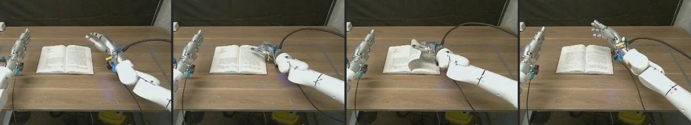

问题
触觉要快，VLA 慢；触觉数据还很少
把一张卡片插进窄缝、用钥匙开锁，这类动作靠的是触觉反应：手指一碰到阻力就立刻调整，频率远高于基于视觉的控制回路。论文认为，把这件事做进 VLA 有两个障碍。
- 数据。大规模预训练（EgoScale、EgoVLA、EgoMimic、DexWild 等）基本是纯视觉，没有力的变化、微滑、局部形变这些物理信号。从头学需要海量同步的视触觉数据，灵巧手遥操作采这么多太贵。论文的回应是：触觉能力可以放到一个专门的中训练阶段去学，预训练阶段不需要触觉。
- 频率。触觉反应要高频，VLM 主干只能低频跑。双系统架构（π0、GR00T、Fast-in-Slow）把快速运动和认知推理完全分开；变速率扩散策略（RDP）只做了单任务的平行夹爪模仿学习。论文要的是一个统一的灵巧手基础模型，在里面同时容纳低频规划和高频触觉修正。
解读“触觉放进中训练”是这篇最实用的一条主张
它把问题从“怎样攒出能和视觉预训练同量级的触觉数据”变成“在已有视觉先验上，用多少带触觉的数据就能接上触觉通道”。结果部分的 2×2 配方表（表 3）是这条主张的直接证据：只有人类预训练 45 分，只有触觉中训练 34 分，两者都有 65 分。
方法 · 全局
三个专家共享注意力，各管一段
策略 πθ 的输入是 RGB 观测 ot、语言 ℓ、触觉力历史 ft−Hf:t 和触觉形变图 dt，输出长度为 H 的动作块 At:t+H，用条件 flow matching 训练：
注意这里的时间约定：τ = 1 是纯噪声，τ = 0 是干净动作，和 π0 系列一致。
Latent 专家
- 主干
- Qwen3-VL-2B，28 层，宽 2048，1.41B
- 读
- 头部相机图像、语言指令、query token
- 学
- 预测未来视觉潜变量，权重 λfuture = 0.5
- 作用
- 给动作生成提供“时间上有根据”的上下文
动作专家
- 规模
- 1.41B（表 9 标注主干同为 Qwen3-VL-2B）
- 输出
- 62 维动作 × 16 步
- 训练
- τ ~ Beta(1.5, 1.0)，覆盖整个 (0, 1]
- 推理
- 6 个 Euler 步：τ 从 1 到 0.4
触觉专家
- 规模
- 0.62B，FFN 中间宽度缩到 1536
- 读
- 触觉 token + 缓存的 KVτ_split，不看原始图像
- 训练
- τ = 0.4 × Beta(1.5, 1.0)，只在 (0, 0.4]
- 推理
- 每次 4 个 Euler 步：τ 从 0.4 到 0，每块 4 次
解读62 维动作怎么来的
论文只写了“双臂末端相对位姿增量 + 手指绝对关节角”，维度 62。两只 22 自由度的 Sharpa Wave 手占 44 维，剩下 18 维正好是每只手臂 9 维（3 维位置 + 6D 旋转）。这是按维度推算的，论文没有写出分解。
方法 · 时空触觉编码 · §3.1 · 附录 C
一段力历史、一个当前力、一张形变图
每只手 5 个指尖传感器，每个传感器提供两样东西：6 轴合力/力矩（wrench）和一张单通道形变深度图。编码后拼成触觉 token 序列：
① 力的时间动态：VQ-VAE
每个指尖取最近 16 帧的 6 维力。1D 时间卷积经两个 strided block 下采样，时间维 mean-pool 成 256 维，再量化到大小 64 的码本里的最近码字。码本用 EMA 更新，长期不用的码字用当前 batch 的激活重新初始化。
损失是按力幅度加权的 MSE，防止码本塌到“无接触”状态上。5 根手指共享卷积权重，另加手指身份嵌入。结果是每只手每根手指一个离散 token。
② 当前力：线性投影
当前未量化的力向量 ft 直接线性投影，保留瞬时接触信息，弥补量化和时间池化丢掉的细节。
论文说 VQ 化的另一个目的是抗传感器漂移（drift-robust）。
③ 空间形变：冻结的 CNN
ResNet-18 改成单通道输入，只保留前三个 stage，每个 stage 后接 3×3 卷积投到 128 通道，展平后线性投影到策略的 token 空间。
这个编码器先在自监督卷积自编码器里预训练，训练策略时冻结。它负责力向量里没有的边缘、滑移、剪切形态。
解读为什么力要 VQ 化，而形变图不用
力是低维高频时序，噪声和漂移大，离散码字相当于一个“接触事件词表”；形变图是空间场，维度高，交给预训练 CNN 抽特征更自然。消融（表 2）分别拿掉了这两路：去掉 VQ-VAE 力编码平均掉 7 分，去掉形变图掉 6 分，只留形变图掉 11 分。两路互补，没有哪一路单独撑起全部增益。
方法 · 异步触觉反应级联 flow matching · §3.2 · 附录 B
两位专家回归同一个速度场，只是各管一段 τ
核心设计是在固定的 τsplit 处把 flow matching 轨迹劈成两段。两位专家回归的是同一个目标速度：
几个容易略过的细节（附录 B）：
- KV 缓存的构成。KVτ_split = [KVlat | KVactτ_split]，包括视觉语言的 K/V，以及用 τsplit 时刻的中间动作重新编码过的动作位置 K/V。这样触觉专家看到的是一个“部分去噪”的动作上下文，而不是最后一次 Euler 迭代留下的噪声时刻编码。
- 训练时切断梯度。慢流在
torch.no_grad下跑出 KVτ_split，触觉专家的损失不回传到动作专家和 latent 专家。 - 动作专家训全段。τact 采自整个 (0, 1]，所以动作专家自己也能完整生成动作，和预训练阶段保持一致。
- 延迟增广。部署时快流在块内偏移 0 / 4 / 8 / 12 处触发，触觉比视觉缓存“新”。训练时从 {0, 4, 8, 12} 均匀采样一个延迟 δ，把触觉帧相对视觉帧往后错开，匹配部署时的新旧差。
- 运行时串行化。真机上用单线程 socket 加执行锁：慢流把 x̂τ_split 和 KV 写进共享内存之前，快流不会开始。
拆开一个动作块：Kslow 取多少，块内发生什么
参数来自 §3.2、算法 1；成功率来自原文 Figure 4
解读和“残差修正”的区别
tex 源码里留着一版被注释掉的早期写法：慢流出基础动作，快流输出残差 ΔA 再相加（明确写着受 RDP 启发）。正式版改成了两段接力的同一条去噪轨迹。好处是触觉专家不需要单独的残差目标，也不需要额外的“加回去”步骤：它学的就是“在 τ ≤ 0.4 的低噪声区域里，根据触觉把动作推到终点”。代价是触觉能改动的幅度被 τsplit 限死：τ = 0.4 时动作的大体形状已经定了，触觉只能做细调。
方法 · 训练配方 · §3.3
人类视频 → 触觉中训练 → 单任务后训练
① 人类第一视角预训练
沿用 EgoScale，在 22,889 小时人类视频上训练 latent 专家和动作专家。动作专家学的是重定向到统一动作空间的人手臂与手部运动。这一阶段没有触觉专家。
② 触觉接地的机器人中训练
100 小时带同步触觉的双臂遥操作数据，按动作原语 × 物体组织。动作专家适配机器人多视角观测和可执行动作；触觉专家从这里开始学高频去噪。
③ 单任务后训练
每个任务约 100 条示范微调。论文称中训练后已有零样本接触操作能力（图 5 右），后训练用于更复杂的具体技能。
SFT 配置（表 9）：AdamW，峰值学习率 1×10⁻⁴，cosine 衰减到 0，无 warmup，无 weight decay，梯度裁剪 1.0，24 张 H100，每卡 batch 16，DeepSpeed ZeRO-1，bf16。各阶段的步数、epoch 未披露。
T-Rex 数据集 · §3 · 附录 F
不按任务采，按“原语 × 物体”采
207 种日常物体 × 22 个动作原语 = 4,554 个候选组合，逐原语人工核对可行性后剩 502 个组合，共 7,755 条、100 小时，单条中位时长 29.8 秒（四分位 21.0–41.1 秒），每个组合平均约 16 条，10 周采完。
- 每条记录：3 路 RGB（头部 ZED X Mini 取左目 + 两个腕部 ZED X One S 广角），640×360、30 Hz；双臂 2×7 关节位置和速度，双手 2×22 关节状态；两腕 SE(3) 位姿；10 个指尖的形变深度图 + 6 轴 wrench；一句语言指令。全部对齐到 30 Hz 的遥操作高层线程。
- 场景多样性：6 种桌面背景；干扰物来自 210 多件的池子，每个场景通常 0–5 件；物体初始位姿每条随机。
- 语言标注：给商用 VLM 4–6 帧头部图像和遥操作时记下的物体名、原语名，让它写一句祈使句，再人工核查。
- 清洗：去掉触觉读数不稳、传感器流损坏、遥操作失误导致异常运动、关节速度极端的片段。计划以 MIT 协议发布。
实验设置 · §4.1 · 附录 D、E
12 个真机任务，每个 16 次，按细则给部分分
| 项目 | 设置 |
|---|---|
| 平台 | Dexmate Vega-1 双臂 + 2 × Sharpa Wave（22 自由度，每手 5 个指尖触觉传感器） |
| 观测 | 头部 + 两个腕部 RGB；逐指力向量与形变图 |
| 动作 | 双臂末端相对增量控制，手指绝对关节控制；差分 IK（Pink）→ 低通滤波 → 厂商 PID；策略线程与 300 Hz 低层控制并行 |
| 试验 | 每任务 16 次，物体位置和朝向随机 |
| 指标 | 论文称“成功率”；附录 E 的 12 个任务都用累加式评分细则，每完成一个子步骤得部分分，满分 1。先在试验上平均，再在任务上平均 |
| 后训练数据 | 每任务 100 条示范（所有方法相同） |
| 基线 | 是什么 | 怎么复现 |
|---|---|---|
| ViTacFormer | ACT 式视触觉模仿策略，交叉注意力融合，辅助预测未来触觉 | 官方代码，每任务单独训练，100 条示范、100 epoch；输入 6D 逐指力；改成直接预测 22 自由度全部关节 |
| RDP | 慢-快视触觉扩散策略，高频触觉修正 | 官方代码，每任务先训 Asymmetric Tokenizer（100 epoch）再训 Latent Diffusion Policy（200 epoch）；触觉 = 10 指 6D 力 |
| Tactile-VLA | 触觉感知 VLA，混合力位控制 | 按论文复现，原版用 GelSight 图像，这里改成 10 指 6D 力，Simple-MLP 编码；每任务单独训练 100 epoch |
| EgoScale | 大规模人类第一视角预训练的 VLA | GR00T N1.7 实现，从 GR00T-N1.7-3B 初始化，每任务微调 200 epoch |
| π0.5 | 预训练 VLA | OpenPI，从官方权重初始化，每任务微调；关节空间控制 |
| π0.5 + tactile | π0.5 把单步触觉拼进状态 | 10 指 6D 力/力矩拼到状态输入，其余同 π0.5 |
12 个任务：做什么、怎么打分、各方法多少分
附录 E 与表 1

表 1 分数
结果 · §4.2–4.3
主表、四组消融、数据效率
主结果（表 1）
12 个任务的平均分
每任务 16 次试验，按细则给部分分。表 1 最后一列。
逐任务热力表
颜色越深分越高；最后一行为平均。论文未在正式版里给任务分组。
原表数字（表 1）
论文从主表读出两点：一是大规模预训练对灵巧操作必不可少，每任务只有 100 条示范的从头训练小模型（ViTacFormer、RDP）全线垫底；EgoScale 靠人类视频预训练成为最强基线。二是触觉对接触任务关键，而朴素地把触觉拼进状态会拖后腿：π0.5 + tactile 平均 6 分，比不加触觉的 π0.5（17）还低。
解读同一套 6 个任务上换算一下，看架构本身值多少
主表里只有 T-Rex 用了 100 小时触觉中训练数据。表 2、表 3 用的 6 个任务（Flip Page、Apply Toothpaste、Split Cup、Open Lock、Extract Card、Screw Bulb）上，我们用表 1 的逐任务数字算基线平均：EgoScale 36.2，π0.5 15.2，Tactile-VLA 14.8，π0.5 + tactile 3.2。对照表 3：T-Rex 有人类预训练、无触觉中训练是 45，比 EgoScale 高约 9 分；两阶段都去掉是 18，和 π0.5 差不多。可见主表 30 分差距里，中训练数据贡献了约 20 分，架构（含触觉专家）贡献约 9 分。
消融：触觉模态与异步设计（表 2）
6 个代表任务的平均分
名称对应：“MLP Force + Deform” = 去掉 VQ-VAE 力编码；“Deform” = 只留形变图；“MLP Force + VQVAE Force” = 只留力，去掉形变图。
原表数字（表 2）
去掉全部触觉掉 23 分，是最大的一项；两路力编码和形变图各自拿掉都会掉 6–11 分；同步版本掉 5 分。论文括号里写的 “(−23%)” 等是百分点。
级联切分点（原文 Figure 4）
Kslow 取 6 时三个任务都最好，数字已放进上面的级联去噪交互。论文的解释：切得太早，动作专家给的视觉运动先验不够；切得太晚，触觉专家能改的余地太小。
疑点正文把 τsplit 和 Kslow 说反了
图 4 的横轴是 Kslow（“Denoise Split Step”），正文却写“τsplit 太小时动作专家先验不足”。按 τsplit = 1 − Kslow/N，τsplit 越小，动作专家走的步数越多，先验应该越充分。这段解释只有换成 Kslow 才说得通。另外三条曲线的最大落差分别只有 4、7、5 分，每个点 16 次试验，峰值位置的差别不能算稳健。
中训练数据：原语组合 vs 任务专用（原文 Figure 5）
同样 100 小时，换成 11 个任务的专用数据
左 6 组是后训练任务，右 4 组是没有后训练的零样本任务（原语 pick、slide、press、wipe）。数字读自原图柱顶标注。
图中数字
后训练任务上，原语数据平均 65，任务专用数据 57.5（我们按图中数字算），不中训练 44.7。零样本任务差距更大：Pick Cube 45 vs 15，Press Button 35 vs 10。
数据效率（原文 Figure 6）
后训练示范数从 10 到 200
横轴按类别等距排列，不是对数刻度。数字读自原图。
图中数字
有中训练时，20 条示范（51 / 59 / 48）已经接近或超过无中训练时 200 条的水平（36 / 55 / 50）。
疑点同一个设置，两处数字不一样
Apply Toothpaste 在“有人类预训练、无中训练、100 条示范”这个设置下，表 3 和图 5 都是 40，图 6 在 100 条处却是 34。另外两个任务（Split Cup 52、Extract Card 46）三处一致。
训练配方 2×2（表 3）
人类预训练 × 触觉中训练
6 个代表任务的平均分。
原表数字（表 3）
两个阶段的增益不是简单相加：单加中训练 +16，单加预训练 +27，两者都加 +47，比 16 + 27 多 4 分。
失败案例（附录 G）
作者的归因：视觉对齐不够精细、动作过快；小物体抓握和手内操作的数据不足；行为克隆的分布偏移；单指级别的协调不够；序列预测机制导致用力偏大；滑动类任务需要更强的时间维触觉条件。
读懂它
这篇真正说明了什么
关键 insight
1. 快慢分工可以放在同一条去噪轨迹里
不需要两个独立策略，也不需要残差头。两位专家回归同一个 v⋆，只是覆盖的 τ 区间不同。这个做法后来被 Motus2 直接采用（σc = 0.2，每块 8 个子块）。
2. 触觉最好别塞进主干的输入
π0.5 + tactile 把力拼进状态，平均 6 分，还不如不用触觉的 π0.5（17）。T-Rex 让触觉只进一个独立的小专家，主干完全不看触觉，这和 ME-Dex 观察到的“朴素拼接触觉反而掉分”一致。
3. 中训练数据按原语组织更划算
同样 100 小时，按“原语 × 物体”采的数据比 11 个任务的专用数据在后训练任务上高约 7.5 分，零样本高得更多。这条结论不依赖触觉，对任何灵巧手数据采集都有参考价值。
4. 异步本身不是主要收益来源
w/o Async 只掉 5 分（60 vs 65），去掉触觉掉 23 分。大部分增益来自“有触觉专家 + 好的触觉编码”，而不是“更高频”。
容易误解的地方
- “成功率”不是成功率。12 个任务全部按累加式细则打部分分（例如 Flip Page 碰到书页就有 0.3 分）。65 分不等于 65% 的试验完整完成。完整完成的比例论文没有报告。
- “比最强基线高 30% 以上”是 30 个百分点（65 vs 35），相对提升约 86%。
- ~5 Hz / ~20 Hz 是示意频率。论文没有报告实测推理时延，也没给 16 步动作块对应的物理时长。数据按 30 Hz 记录，如果动作块同样是 30 Hz，一块约 0.53 秒，慢流约 1.9 Hz，和图上的 5 Hz 对不上。
- 触觉专家不看图，但读视觉语言 KV。“完全不依赖原始视觉观测”指的是它不重新编码图像，它仍然通过 KV cache 读到慢流时刻的视觉上下文。
FAQ
触觉专家为什么能 4 倍频率跑？
快流不重跑视觉塔、latent 专家和动作专家，每次只跑 4 个 Euler 步的小专家（0.62B，FFN 缩到 1536），读的是克隆出来的 KVτ_split。算法 1 里块内偏移 0 / 4 / 8 / 12 各触发一次，每次输出一个新的 16 步动作块并立即执行，相当于每 4 个控制步用最新触觉重新“收尾”一次。
去掉触觉后还剩 42 分，比 EgoScale（36.2）还高，说明什么？
说明除了触觉之外，T-Rex 的底子（Qwen3-VL 主干、人类预训练、100 小时机器人中训练、未来视觉潜变量预测）已经比基线强。论文没写 w/o Tactile 是否也用了带触觉的中训练数据（只是不喂触觉），如果是，这 42 分里有中训练数据的贡献。
麻将任务看起来最依赖触觉，消融里为什么没有？
Sort Mahjong 要求把背面朝上的麻将牌拿起来“摸出”是红中、发财还是白板，是 12 个任务里最接近纯触觉识别的一个（T-Rex 65，EgoScale 36）。但消融只选了 6 个任务，不包括它，所以没法知道去掉触觉后这个任务掉多少。
未来视觉潜变量预测起多大作用？
论文没有单独消融 𝓛future。它的具体形式正文也没展开，tex 源码注释里这一项曾叫 λflare，暗示沿用了 FLARE 式的未来潜变量对齐（EgoScale 同一团队的做法），但正式版没有说明。
局限与疑点
作者承认的，和我们读出来的
论文自己提到的
- 精细视觉对齐不足，动作过快会导致碰撞（拧灯泡）。
- 小物体抓握和手内操作仍欠缺灵巧性，归因于遥操作数据分布（钥匙滑落）。
- 行为克隆的分布偏移导致定位不准（放鸡蛋）。
- 单指级别的协调不足，多指会误触（麻将）。
- 序列预测机制导致可变形物体上用力偏大（牙膏）。
- 滑动类任务需要更强的时间维触觉条件（抽卡）。
我们读出来的
- 疑点主表的比较不对等：只有 T-Rex 用了 100 小时触觉中训练数据，基线都只用每任务 100 条示范。见上面的换算。
- 疑点评测协议说“多阶段任务用 progress-based 细则”，附录却把 12 个任务都写成 additive 细则，并定义了另一种 progress-based 细则而没有任务用到。
- 疑点正文对 τsplit 的解释方向反了（见结果部分）；切分点曲线的差异在 16 次试验的噪声范围内。
- 疑点Apply Toothpaste 同一设置下 40 与 34 两个数字。
- 疑点“反应式”没有定量证据：没有实测时延、控制频率，也没有扰动/滑移注入实验；同步版本只差 5 分，且“同步基线”的具体做法没描述。
- w/o Tactile 是否重新做了不带触觉的中训练，论文没说。
- 酸碱中和任务：指令写“变绿或变黄”，任务描述和细则写“由蓝变无色”，而溴百里酚蓝中和后是绿/黄色，不会变无色。Refill Tablet 的描述说右手食指合盖，细则写右手拇指。
- tex 注释里保留的旧版主表中 Screw Bulb 是 43、平均 67，正式版改为 35、平均 65，改动原因未说明。
- 只有一个平台（Vega-1 + Sharpa Wave），没有跨本体实验；零样本任务的试验次数没写。
放到专题里看
“快慢双速率”这条线的起点
在力与触觉专题里，T-Rex 的位置是：触觉作为动作生成最后一段的高频修正通道，不预测未来触觉，也不进入主干。
| T-Rex | Motus2 | ForceVLA / Tactile-VLA | N₀-VTLA / N₀-TWAM / ME-Dex | |
|---|---|---|---|---|
| 触觉进哪里 | 独立触觉专家，读主干 KV 缓存 | 旁路触觉专家（宽 128），读主干 KV | VLM 之后的 MoE / VLM 前缀 | 预测的触觉潜变量或未来触觉 |
| 去噪切分 | τ = 1 → 0.4 主干，0.4 → 0 触觉，块内 4 次 | σ = 1 → 0.2 主干，0.2 → 0 触觉，块内 8 次（论文写明参照 T-Rex） | 不切分 | 不切分 |
| 预测未来触觉 | 否 | 训练时预测未来力窗口，部署不用 | 否 | 是（形式各不同） |
| 本体 | Sharpa Wave 双灵巧手 | Sharpa Wave / Wuji Hand 2 | 平行夹爪 | 平行夹爪为主（ME-Dex 含灵巧手） |
| 触觉增益 | 6 任务 42 → 65 | 2 任务 60.0 → 72.5 | — | 见各篇 |
- 和 Motus2：几乎同一个机制，Motus2 在附录明确写“参照 T-Rex”。区别在于 Motus2 还让触觉专家在训练时预测下一个力窗口，并把主干换成了视频世界模型；两者都用 Sharpa Wave 手，Motus2 的 Pull Out Paper Cup 与 T-Rex 的 Split Cup 是同一类任务。
- 和 Tactile-VLA：T-Rex 把它当基线，改成 6D 力输入后在 12 个任务上平均 15 分。两者对“触觉放哪里”的回答相反：Tactile-VLA 放进 VLM 前缀，T-Rex 坚决不进主干。
- 和 N₀-VTLA、N₀-TWAM：它们认为“当前触觉只记录已经发生的接触，策略会落后一步”，所以让模型预测接下来的触觉。T-Rex 的回答是另一条路：不预测，但让当前触觉更频繁地进入动作生成。N₀-TWAM 的相关工作把 T-Rex 归为“反应式”一类。
- 和 ME-Dex：两篇都观察到朴素地把触觉拼进 π0.5 会掉分（T-Rex 17 → 6）。
术语表
读这篇会遇到的词
展开术语表
- MoT
- Mixture-of-Transformers：各模态专家有自己的权重，在共享的自注意力里交互。
- τsplit
- 去噪轨迹的切分点，本文取 0.4；τ = 1 为噪声，τ = 0 为干净动作。
- Kslow / Kfast
- 慢流（动作专家）和快流（触觉专家）的 Euler 步数，本文 6 和 4，总步数 N = 10。
- KVτ_split
- 慢流结束时缓存的视觉语言 K/V，加上用中间动作重新编码的动作 K/V。
- Ta
- 动作块长度，16 个控制步。
- VQ-VAE
- 向量量化自编码器。本文用它把每根手指 16 帧 6D 力压成一个离散码字（码本大小 64）。
- wrench
- 6 轴合力/力矩。
- deformation map
- 指尖传感器给出的单通道形变深度图。
- mid-training
- 预训练与单任务后训练之间的一个阶段，本文用 100 小时带触觉的机器人数据。
- motor primitive
- 动作原语，如 grasp and lift、insert、twist，共 22 个。
- delay augmentation
- 训练时把触觉帧相对视觉帧错开 {0, 4, 8, 12} 步，模拟部署时的新旧差。
- EgoScale
- 用人类第一视角视频做大规模预训练的灵巧操作 VLA，基于 GR00T 实现。
- RDP
- Reactive Diffusion Policy，慢-快视触觉扩散策略。